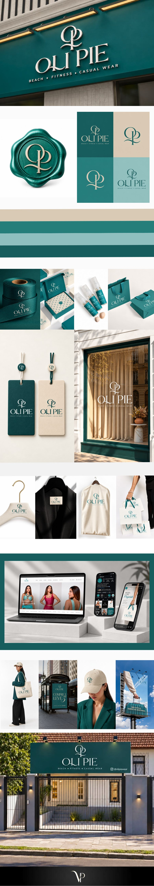

Case 12 · Moda feminina

Praia, fitness e casual com a mesma assinatura.
Moda feminina de Porto Alegre com desenvolvimento próprio. A nova identidade une as três linhas em uma marca só.
Apresentação da marca em stories